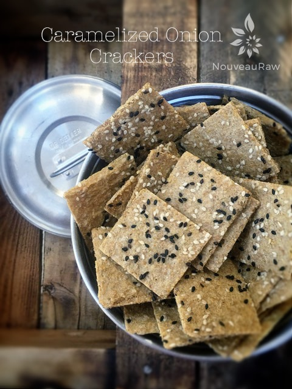
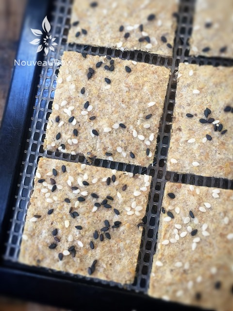
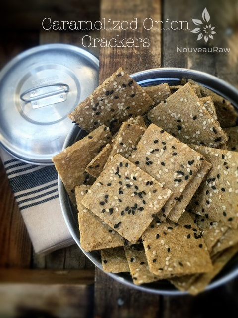

Caramelized Onion Crackers

~ raw, vegan, gluten-free, nut-free ~
Well good golly miss molly, these turned out sumptuous. Talk about a savory cracker that is full-bodied in flavor and texture!
This is one of those crackers that doesn’t need a spread or any type of topping. It is divine all by itself. Of course, the onion flavor is predominant but there is a slight lingering sweetness that brings up the rear from the caramelized onions. I realize that this cracker takes quite a few steps to create, but it is well worth it.
I like to create recipes that have multiple uses. If you head over to the post on how to make Caramelized Onions, you will notice that I listed the ingredients needed for a large 5 cups batch or a small 1 2/3 cup batch. What I recommend is that you make a large batch. You will end up with 5 cups of caramelized onions.
You only need 2 cups for this recipe, unless you want to make a double batch. But with the leftover onions, you could make my Caramelized Onion Spread which is mouth-watering-amazing on crackers, in wraps, or to use as a dip for veggies. Or you could make a loaf of Caramelized Onion Bread.
Even putting some of the onions aside to use on your next salad would add a wonderful savory depth of flavor. But wait there’s more! The sauce that is created for the marinating process should be saved. You can thicken it and make a salad dressing too. Goodness, there are just so many wonderful recipes to be made!
Keep in mind when making these crackers that they won’t dry to a firm, crunchy cracker. I am pretty sure that this is due to the olive oil used in the recipe. For one last idea, you could cut this batter into larger squares and create thin bread-like pieces for sandwiches. I hope you try it and enjoy it!
Yields 1 tray
- 1 cup raw sunflower seeds, soaked
- 1 cup golden flax seeds, ground
- 1/4 cup cold-pressed olive oil
- 1/4 cup marinate sauce liquid from the caramelized onions below
- 3 oz. coconut aminos
- 2 cups Caramelized Onions, chopped
Preparation:
- In the food processor, fitted with the “S” blade, combine the sunflower seeds, and ground flax seeds. Pulse together until the sunflower seeds break down into small bits.
- Add the olive oil, marinate sauce liquid, and aminoes. Process till well combined.
- Add the caramelized onions and pulse until the onions are broke down but not turned into a paste.
- Update: I have made these many times over and you can either leave the batter a bit chunky or your process to a smooth texture. The current cracker photos are with the batter blended smooth.
- Smooth onto teflex sheets about 1/4″ thick, score your cracker/bread desired size with a pizza cutter or knife (press gently, you don’t want to cut your teflex sheet.
- I sprinkled black and/or white sesame seeds on top.
- Dehydrator at 145 degrees (F) for 1 hour, then reduce to 115 degrees (F) for 8-10 hours, turning over and remove the teflex sheet, drying for another 10-12 hours or until dry.
- Store in an airtight container for several weeks.
Culinary Explanations:
- Why do I start the dehydrator at 145 degrees (F)? Click (here) to learn the reason behind this.
- When working with fresh ingredients it is important to taste test as you build a recipe. Learn why (here).
- Don’t own a dehydrator? Learn how to use your oven (here). I do however truly believe that it is a worthwhile investment. Click (here) to learn what I use.

Right out of the dehydrator and ready to be enjoyed.

© AmieSue.com